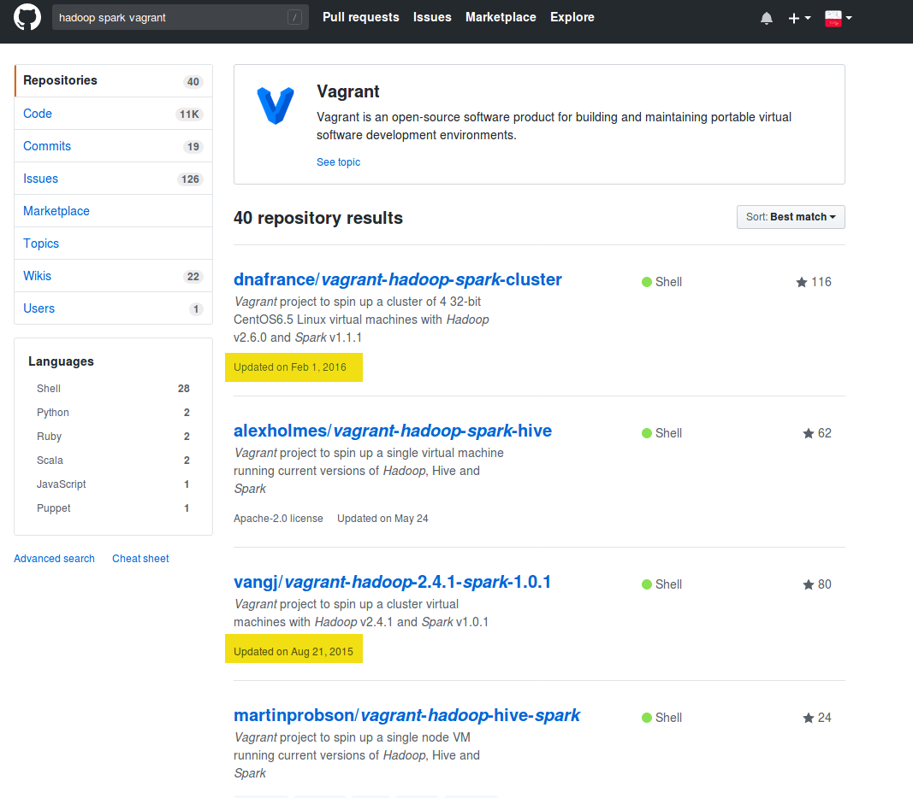
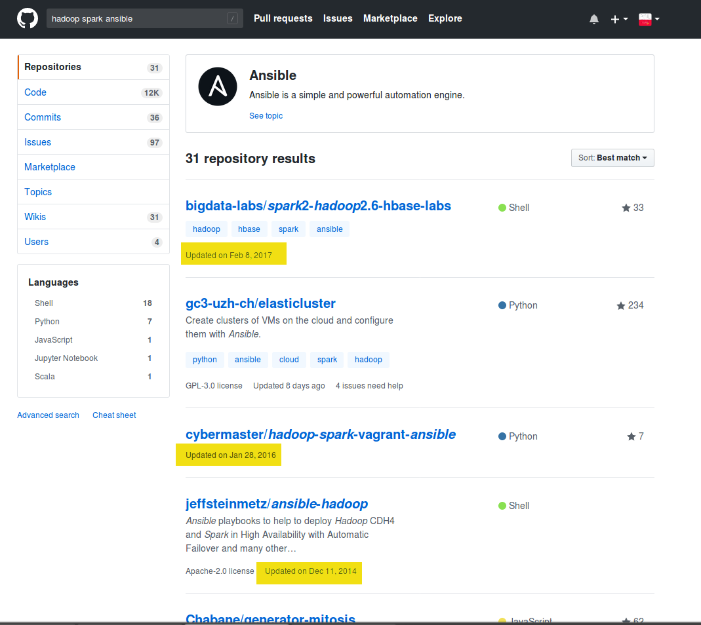
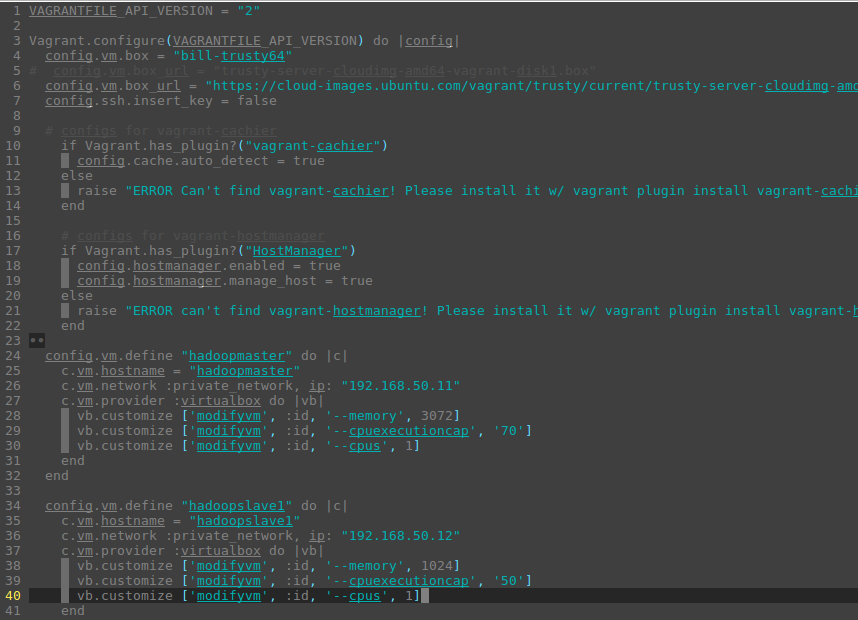
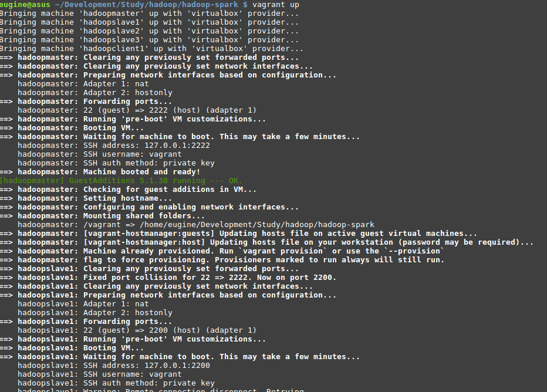
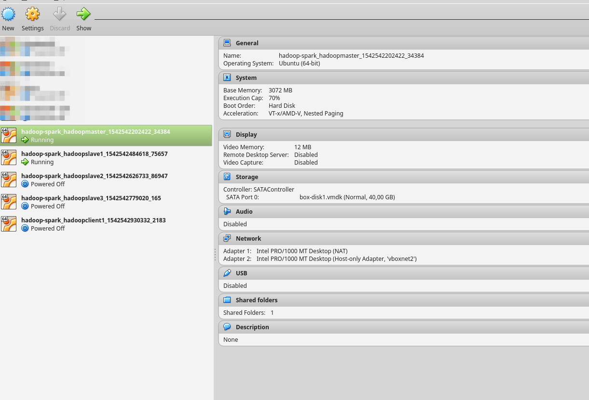
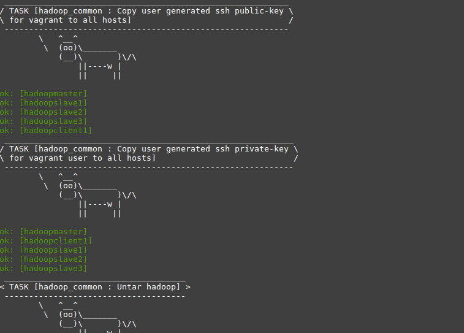
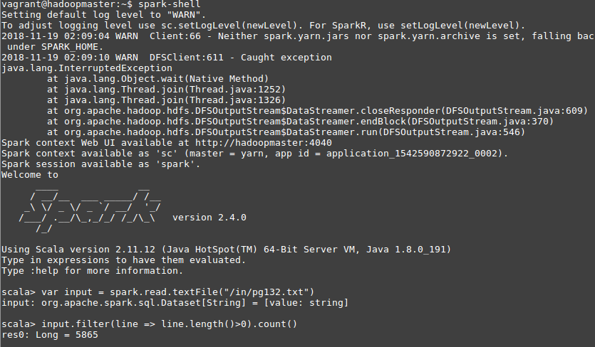
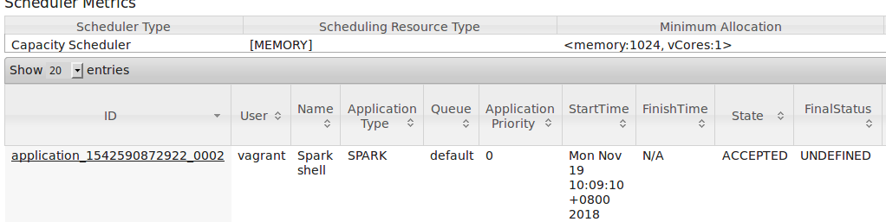

Creating Hadoop Cluster with Spark
using Vagrant, Ansible
2018, Eugene Arbatsky
You'd get such results if you will try to find prepared files for creating such cluster

or like this... Everything is outdated

vagrant up (Check Vagrantfile and make needed changes)

vagrant up (Create VMs and run them)

vagrant up (You can check states in VirtualBox)

Create cluster by using ansible

Define slaves in etc/hadoop/slaves
vagrant@hadoopmaster:/usr/local/hadoop-2.9.1$ cat etc/hadoop/slaves
192.168.50.11
192.168.50.12
192.168.50.13
192.168.50.14
Steps to create a cluster:
- Clone the repository
- cd cluster/
- vagrant up
- sh install_getfiles.sh
- ansible-playbook -i inventory/vagrant-4hosts.inv playbooks/hadoop.yml
- ssh -i ~/.vagrant.d/insecure_private_key vagrant@192.168.50.11
- vm# cd $HADOOP_INSTALL
- vm# sbin/start-all.sh
Test Hadoop
- Prepare hdfs: bin/hdfs namenode -format
- Cleate input dir for data: bin/hdfs dfs -mkdir /in
- Put some info in it: bin/hdfs dfs -copyFromLocal /home/vagrant/books/* /in
- Run example: bin/hadoop jar share/hadoop/mapreduce/hadoop-mapreduce-examples-2.9.1.jar wordcount /in /out
- See results: bin/hdfs dfs -ls /out
- Remove results: bin/hdfs dfs -rm -R /out
Test Spark (in Scala)
- vm# spark-shell
- ss# var input = spark.read.textFile("/in/somefile.txt")
- ss# input.filter(line => line.length()>0).count()

Test Spark (in Scala)

Test task
Calculate words with 2 and more vowels in an online book